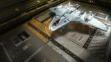

Top speed / boost
280 / 350 m/s
Zorgon Peterson designed the Mandalay around the SCO frame shift drive from the ground up — light hull, native overcharge handling, transparent cockpit floor for planetary work, and fuel economy that keeps heat down across a thousand-jump expedition. At or near the top of the entire exploration class: the longest practical jumps of any medium, purpose-built SCO handling, and a superb canopy for exobiology. Only the Anaconda's sheer module room and the Caspian's scale carve out niches the Mandalay doesn't fill.

This ship's 1–100 suitability rating reflects its fully-engineered fit for this role, scored against every ship in the role. See how ships are rated.
The Mandalay is the first ship designed natively for the Supercruise Overcharge era. Where older explorers bolt an SCO drive onto a hull built for normal flight, the Mandalay's whole design — light mass, advanced micro-thrusters, generous power for the drive — assumes you'll be overcharging between stars. The result is a ship that jumps further and travels through systems faster and cooler than its rivals.
For the explorer it checks every box: a class-leading engineered jump range, a class-5 power plant feeding a willing SCO FSD, a size-6 fuel scoop slot like the Asp and Phantom, and a transparent cockpit floor with the boarding ramp beneath it that makes lining up exobiology landings genuinely easy. Frontier themselves position it as out-ranging the Anaconda — and in practice, for a medium-pad explorer, nothing reaches further.
Long-range expeditions, exobiology tours, neutron highway runs and road-to-riches first-discovery sweeps. Its SCO handling and transparent floor make planetary scanning and deep-black travel a pleasure.
Four things put the Mandalay at the top of the exploration class:
The Anaconda carries more modules and can self-repair more redundantly on a months-long expedition; the Caspian Explorer is a far larger platform for crewed deep-space operations. Neither out-ranges the Mandalay in practice, and both need a large pad. The Mandalay's only real 'ceiling' is module count, not capability — for the vast majority of expeditions it is the best tool for the job.
Both tables rate ships for the exploration role specifically. The role column is engineered maximum jump range — the number that decides how far each hop carries you.
Same class — medium-pad explorers
| Ship | Class | Max jump (LY) | Pros & cons vs Mandalay | Rating |
|---|---|---|---|---|
| Mandalay this | Medium | ~85 | — this hull (baseline) | 96 |
| Krait Phantom | Medium | ~75 | Sleek, roomy, strong range, no SLF to add weightOlder non-SCO hull; shorter range than the Mandalay | 93 |
| Asp Explorer | Medium | ~62 | The beloved all-time great; superb canopy; cheapShorter range; older flight model | 86 |
| Krait Mk II | Medium | ~58 | Can fight on the way out; SLF bayHeavier; explorer second, combat first | 80 |
| Python | Medium | ~45 | Huge internals; doubles as hauler/combatHeavy; modest range for the class | 78 |
| Asp Scout | Medium | ~55 | Cheap; light; surprising range for the priceCramped; few utilities; budget option | 70 |
| Type-6 Transporter | Medium | ~48 | Very cheap; decent range; roomyTrader at heart; weak planetary kit | 68 |
Among medium explorers the Mandalay is the new king — it out-ranges the long-respected Krait Phantom and Asp Explorer while travelling faster and cooler thanks to native SCO. The Asp remains the value pick and the Phantom the roomy alternative, but for pure exploration capability the Mandalay leads the class.
Other classes — the long-haul leagues
| Ship | Class | Max jump (LY) | Pros & cons vs Mandalay | Rating |
|---|---|---|---|---|
| Anaconda | Large | ~80 | Vast internals; legendary long-haul explorer; great rangeLarge pad; ponderous; costly to engineer | 94 |
| Caspian Explorer | Large | ~70 | Huge crewed deep-space platform; enormous module roomLarge pad; very expensive; slower | 94 |
| Diamondback Explorer | Small | ~72 | Cool-running, long-jumping, cheap; small-pad accessCramped; fewer modules; less comfortable | 88 |
| Dolphin | Small | ~50 | Cool, comfortable, small-pad; great for exobio hopsTiny; limited module room | 80 |
| Imperial Courier | Small | ~52 | Fast, pretty, small-pad explorer on a budgetCramped; weak module room | 73 |
The Anaconda and Caspian trade pad size and agility for module count on the longest crewed expeditions; the Diamondback Explorer is the small-pad budget alternative. For a medium that reaches almost as far as a big-ship explorer while staying nimble and cheap to run, the Mandalay is the sweet spot.
The Mandalay's hull is around 16.5M Cr for Odyssey owners buying with credits (non-Odyssey owners must unlock it with ARX first). There is no rank or permit gate. For a top-tier explorer that's reasonable — comparable to a Krait Phantom and far below a fully-kitted Anaconda.
Outfitting for exploration is cheap relative to combat: lightweight low-class modules, a fuel scoop, scanners and a Guardian FSD booster (a tech-broker unlock, not a purchase). The big one-time cost is the engineering grind for the FSD and thrusters.
The Mandalay was an ARX early-access hull before its credit release. If you hold an ARX pre-built variant, the standard rule applies: stock modules sell for 0 Cr and can't be stored, but engineering the stock cores in place keeps the free rebuy.
The Mandalay launched in two ARX pre-built variants — a Standard package (basic pulse lasers and cargo racks) and a Stellar package (upgraded weapons and a full planetary-exploration fit). Both follow the pre-built rules.
If you own a pre-built, never strip the stock modules: add only to empty slots and engineer the stock cores where they sit to preserve the free rebuy.
| Variant | Standard / Stellar (ARX pre-built) | |||||||||||||||||||||||||||||
|---|---|---|---|---|---|---|---|---|---|---|---|---|---|---|---|---|---|---|---|---|---|---|---|---|---|---|---|---|---|---|
| S | t | a | n | d | a | r | d | f | i | t | ||||||||||||||||||||
| B | a | s | i | c | p | u | l | s | e | l | a | s | e | r | s | , | c | a | r | g | o | r | a | c | k | s |
Build around the stock fit, not over it — engineer the cores in situ, fill empty optionals with exploration kit, and keep the rebuy free.
A long-range exploration fit. Initial is a buy-only starter; A-rated is the expedition baseline; Engineered is the max-range end-state with a Guardian FSD booster and lightweight everything.
| Slot | Initial · buy-only | A-Rated · no eng | Engineered |
|---|---|---|---|
| Hardpoints | |||
| Medium 1 | — | — | — |
| Medium 2 | — | — | — |
| Medium 3 | — | — | — |
| Medium 4 | — | — | — |
| Small 1 | — | — | — |
| Small 2 | — | — | — |
| Utility Mounts | |||
| Utility 1 | — | Heat Sink Launcher | Heat Sink Launcher |
| Utility 2 | — | Heat Sink Launcher | Heat Sink Launcher |
| Utility 3 | — | — | Shield Booster (light) |
| Utility 4 | — | — | — |
| Core Internals | |||
| Power Plant (5) | E | A | D — Low Emissions / Armoured |
| Thrusters (5) | E | A | A — Dirty Drive Tuning (G5) |
| FSD (5, SCO) | A | A | A — Increased Range (G5) |
| Life Support (4) | E | D | D — Lightweight |
| Power Distributor (5) | E | D | D — Engine Focused |
| Sensors (5) | E | D | D — Lightweight |
| Fuel Tank (5) | C | C | C |
| Optional Internals | |||
| Optional 6 | Fuel Scoop 6 | Fuel Scoop 6 | Fuel Scoop 6 — (best you can afford) |
| Optional 5 | Cargo Rack 5 | Guardian FSD Booster 5 | Guardian FSD Booster |
| Optional 4 | — | Shield Generator 4 (bi-weave) | Bi-Weave 4 — light |
| Optional 4 | — | AFMU 4 | AFMU 4 |
| Optional 3 | — | SRV Hangar (Planetary) | SRV Hangar (Planetary) |
| Optional 3 | — | AFMU 3 | AFMU 3 (redundancy) |
| Optional 2 | — | Detailed Surface Scanner | DSS |
| Optional 1 | — | Detailed Surface Scanner | Module Reinforcement 1 |
| Optional 1 | — | — | Heat Sink storage / spare |
| Optional 1 | — | — | — |
The Guardian FSD Booster (a flat range gain unlocked at a Guardian site) and the fuel scoop (so you never strand) are non-negotiable. A planetary SRV bay and at least one AFMU round out a self-sufficient expedition fit; everything else is comfort.
Fly the hull off the pad — the SCO FSD is fitted from the start, so even stock it jumps and overcharges well.
Fit the largest fuel scoop the class-6 slot allows; never leave the bubble without it.
Add a DSS for mapping payouts and a planetary SRV bay for surface exploration; a light shield is optional insurance.
A-rating priority for an explorer — range and self-sufficiency first:
Every kilogram you remove and every grade on the FSD adds light-years. Prioritise the FSD, then mass reduction, then the Guardian booster — in that order.
The exploration engineering pass is about range and self-sufficiency, not power. Pin blueprints for remote application; the Mandalay's SCO FSD responds especially well to Increased Range.
| Module | Blueprint | Experimental | Engineer |
|---|---|---|---|
| FSD (SCO) | Increased Range (G5) | Mass Manager | Felicity Farseer |
| Thrusters | Dirty Drive Tuning (G5) | Drag Drives | Professor Palin / Mel Brandon |
| Power Plant | Low Emissions (G5) | Thermal Spread | Hera Tani |
| Power Distributor | Engine Focused (G3) | — | The Dweller |
| Life Support | Lightweight (G5) | — | Felicity Farseer |
| Sensors | Lightweight (G5) | — | Felicity Farseer |
| Bi-Weave Shield | Lightweight (G3) | — | Lei Cheung |
Recommended order
Light-to-moderate — exploration blueprints (Increased Range, Lightweight) lean on raw and encoded materials you gather naturally while flying. The FSD G5 is the only demanding one. Ask for exact per-blueprint counts if you want to verify before a long trip.
Approximate progression across the three states (figures are representative, not exact rolls):
| Stat | Initial | A-rated | Engineered |
|---|---|---|---|
| Max jump (laden) | ~38 LY | ~55 LY | ~85+ LY |
| Top speed (boost) | 350 m/s | 350 m/s | ~400 m/s |
| Heat (scooping) | moderate | low | very low |
| Self-sufficiency | none | AFMU + SRV | AFMU×2 + SRV |
| Mass (laden) | high | reduced | minimal |
Engineering more than doubles jump range — from a stock ~38 LY to 85+ LY laden — while cutting heat and mass. That range, combined with SCO travel speed, is what makes the Mandalay the fastest hull to actually get anywhere in the galaxy.
Start with the exploration loop from any bubble station, then range outward. For exobiology, target systems with many landable, atmospheric or icy bodies; the Mandalay's landing ease pays off most on rough terrain.
The Mandalay is the explorer's explorer for the SCO era: the longest practical range of any medium, native overcharge handling, and a cockpit built for planetary science. The Anaconda still wins on module count for the longest crewed hauls, but for the overwhelming majority of expeditions the Mandalay is simply the best ship for getting there, scanning it, and coming home — faster and cooler than anything in its class.
Figures on this page are verified against the sources below.